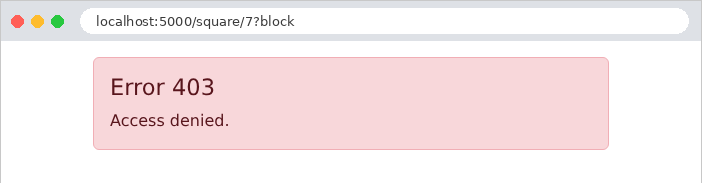

7. 请求的生命周期
从请求到达到响应发出之间，[Flask] 要经历几个步骤，应用程序可以在每一步进行干预。其中有几个我们已经遇到过：路径变量转换器（示例 02 和 12）、[before_request] 函数（示例 16、22 和 23）以及错误处理器（示例 08 和 12）。本章把它们整合到一个示例中，该示例在每个步骤向控制台输出一条消息，以便你观察它们的顺序：

- 1 和 8. WSGI 中间件。[WSGI] （*Web Server Gateway Interface*）是把用 [Python] 编写的 Web 服务器与应用程序连接起来的标准。从服务器的角度看，[Flask] 应用程序只是一个可调用对象，它接收请求的描述并生成响应。中间件 是类似的一种对象，它包裹在应用程序外面：它在请求到达 [Flask] 之前拦截请求，并在之后拦截响应。它相当于 [Java] 的 Servlet 过滤器；
- 2. 路由。[Flask] 查找与 URL 对应的路由，路由转换器转换路径变量；
- 3 和 4. [before_request] 函数，按其注册的顺序执行。如果其中任何一个返回了响应（或抛出了异常），处理就在此停止：不会调用动作。我们就在这里验证用户是否已登录（下一章）；
- 5. 动作，以及它所生成的视图；
- 6. [after_request] 函数接收响应，可以修改它（添加头部或 Cookie），并且必须返回它。它们按注册顺序的相反顺序执行；
- 7. [teardown_request] 函数，它们总是在最后执行，即使异常中断了处理。它们不能再修改响应；其用途是释放资源（例如关闭数据库连接）；
- x. 错误处理器 （[errorhandler]）：由 [before_request] 函数、动作或视图抛出的异常，会被交给为其类注册的处理器，由它生成错误响应。然后，这个响应会像普通响应一样经过 [after_request] 函数。
它们相当于 [Spring MVC] 的拦截器和 [ASP.NET Core MVC] 的动作过滤器。函数 [before_request]、[after_request]、和 [teardown_request] 通常被称为钩子。
7.1. 示例 24：处理请求所涉及的步骤
| 24-lifecycle/
├── app.py
├── controllers/
│ └── calc.py
├── filters/
│ ├── errors.py
│ ├── hooks.py
│ ├── integer.py
│ ├── logger.py
│ └── marks.py
└── templates/
├── calc/
│ └── result.html
├── error.html
└── layout.html
|
该应用程序只有一个动作，用于计算整数的平方：[/square/7]。根据 URL 的不同，它会成功，或以各种方式失败。
7.1.1. WSGI 中间件：filters/logger.py
| # filters/logger.py：一个 WSGI 中间件。WSGI 是连接
# Python Web 服务器与应用的标准：应用是一个可调用对象
# app(environ, start_response)。中间件就是这样一个对象，它包装
# 应用：在 Flask 之前看到每个请求经过，在 Flask 之后看到响应
class LoggerMiddleware:
def __init__(self, application):
self.application = application # 被包装的应用（Flask）
def __call__(self, environ, start_response):
# environ：描述请求的字典（方法、路径……）
request = environ["REQUEST_METHOD"] + " " + environ["PATH_INFO"]
if environ.get("QUERY_STRING"):
request += "?" + environ["QUERY_STRING"]
print()
print("---", request)
print("1. middleware (before)")
status = []
# start_response：Flask 通过它宣告响应的状态码和
# 头部；我们包装它，以便在途中记下状态码
def spy_start_response(status_line, headers, exc_info=None):
status.append(status_line)
return start_response(status_line, headers, exc_info)
# 其余的一切：Flask、动作、视图
response = self.application(environ, spy_start_response)
print(f"8. middleware (after: code {status[0] if status else '?'})")
return response
|
- 第 7 行：中间件接收它所包裹的应用程序；
- 第 10 行：特殊方法 [__call__] 使对象成为可调用的：[middleware(environ, start_response)] 执行的就是这个方法。这是 [WSGI] 规定的签名：[environ] 是描述请求的字典（方法在 [REQUEST_METHOD] 中，路径在 [PATH_INFO] 中，参数在 [QUERY_STRING] 中，还有头部等）；[start_response] 是服务器提供的函数，应用程序调用它来报告响应码和头部；
- 第 12–17 行：中间件显示请求。这是第 1 条消息：此时 [Flask] 中还没有发生任何事情；
- 第 22–24 行：为了确定响应码，中间件向应用程序传入它自己的一个函数——代替 [start_response]——该函数在响应码经过时记录下来，然后调用真正的函数。这是一个内部函数 （定义在另一个函数之内）：它可以访问包含它的函数的变量，这里是列表 [status]；
- 第 27 行：对被包裹应用程序的调用：其余的处理都发生在这次调用之中；
- 第 28 行：第 8 条消息，在 [Flask] 处理完毕时输出。
中间件组件工作在 [WSGI] 层面：它不知道 [request]、[g] 或 [Flask] 的路由。它用于适用于所有请求的处理，而不论是哪个应用程序：日志记录、压缩、处理代理等。[Werkzeug] 提供了其中的一些，例如 [ProxyFix]，当应用程序位于代理服务器之后时，它会修正客户端的地址（案例研究在讨论客户端 IP 地址时会谈到这一点）。
7.1.2. 转换器：filters/integer.py
| # filters/integer.py：路径变量 <integer:n>，转换为整数，如果
# 不是整数则为 None（此时由动作来决定）
from werkzeug.routing import BaseConverter
class IntegerConverter(BaseConverter):
# 任意一段路径（不含斜杠）
regex = r"[^/]+"
def to_python(self, value: str) -> int | None:
print(f'2. conversion of the parameter (received value: "{value}")')
try:
return int(value)
except ValueError:
return None
|
一个转换器（示例 12），它接受路径的任意一段（[[^/]+]：一个或多个不是 [/] 的字符），并对其整体进行转换，如果它不是有效的路径段，则转换为 [None] 。与 [<int:n>] 不同（对于 [/square/abc]，它会返回 404 页面），这里由动作来决定结果。它显示第 2 条消息。
7.1.3. 标记的动作：filters/marks.py
[before_request] 函数会在所有动作之前运行。通常，某个处理只适用于特定的动作。指定这些动作的简单方法是对它们进行标记：
| # filters/marks.py：两个标记动作的装饰器，不改变
# 动作的执行：它们给动作添加一个属性，filters/hooks.py 中的
# 函数会查找该属性
def block(action):
action.block = True
return action
def timing(action):
action.timing = True
return action
|
这两个装饰器不会改变动作本身：它们只是给动作添加一个属性（在 [Python] 中，函数是对象，可以为其添加属性），而动作保持不变。[before_request] 函数将在请求所指向的动作上查找这些标记。
7.1.4. 钩子：filters/hooks.py
| # filters/hooks.py：在每个动作之前和之后执行的函数
import time
from flask import abort, current_app, g, request
# 将处理当前请求的动作（没有路由匹配时为 None）。
# request.endpoint：动作的名称（"calc.square"）；view_functions：
# 应用的 名称 -> 函数 字典
def targeted_action():
return current_app.view_functions.get(request.endpoint)
# 目标动作上是否带有 [name] 标记（见 marks.py）？
def marked(name: str) -> bool:
return getattr(targeted_action(), name, False)
def register(app):
# before_request：在动作之前。如果函数返回响应（或抛出
# 异常），处理就此停止：动作不会被调用
@app.before_request
def block():
if marked("block"):
print(f"3. before_request Block (targeted action: {request.endpoint})")
if "block" in request.args:
abort(403) # 一个 403 错误响应（拒绝访问）
@app.before_request
def timing_start():
if marked("timing"):
print("4. before_request Timing (before)")
# 开始时间，存放在 g 中（请求作用域）
g.start = time.perf_counter()
# after_request：在动作（以及它构建的视图）之后，带着
# 响应，函数可以修改它；必须将其返回
@app.after_request
def timing_after(response):
if marked("timing"):
print(f"6. after_request Timing (code {response.status_code})")
return response
# teardown_request：在最后，总是被调用，带有可能出现的
# （未处理的）异常；它不能再改变响应
@app.teardown_request
def timing_end(exception):
if "start" in g:
ms = round((time.perf_counter() - g.start) * 1000)
outcome = "" if exception is None else f", exception {type(exception).__name__}"
print(f"7. teardown_request Timing (end, {ms} ms{outcome})")
|
- 第 10–11 行：处理请求的动作。路由匹配之后，[request.endpoint] 包含所选路由的名称（[calc.square]：蓝图名称、一个点、函数名称）；[current_app.view_functions] 是将每个名称映射到对应函数的字典。如果没有路由匹配，[request.endpoint] 会被设置为 [None]，函数返回 [None]；
- 第 15–16 行：标志是否已设置？[getattr(object, name, default)] 返回给定名称的属性，如果该属性不存在（或对象为 [None]），则返回默认值；
- 第 19 行：回调函数由 [app.py] 调用的一个函数注册；
- 第 24–28 行：第一个钩子，消息 3：对于标记为 [block] 的动作，URL 的 [?block] 参数会引发 403 错误（*Forbidden*，拒绝访问）：[abort] 抛出一个异常，从而中断处理；
- 第 31–35 行：第二个钩子，消息 4：对于标记为 [timing] 的动作，起始时间存储在 [g] 中。[time.perf_counter()] 是专门用于测量时长的高精度时钟；
- 第 39–43 行：消息 6。该函数接收响应，并且必须将其返回（可以先做修改）。[response.status_code] 是响应状态码；
- 第 47–52 行：消息 7，包含自钩子 4 以来经过的时间。["start" in g] 测试用于验证计时是否已经开始。如果存在尚未处理的、中断了处理的异常，该函数会接收到这个异常，否则接收到 [None]。
7.1.5. 错误处理：filters/errors.py
| # filters/errors.py：应用的错误处理器
from flask import render_template
from werkzeug.exceptions import HTTPException
def register(app):
# 给定类型的 "预期外" 异常：ValueError 及其子类
@app.errorhandler(ValueError)
def value_error(e: ValueError):
print(f"x. errorhandler ValueError ({e})")
# 不使用默认的错误页面，而是使用我们的 [error] 视图，状态码为 500
return render_template("error.html", code=500), 500
# HTTP 错误（abort(400)、abort(403)、未知页面 -> 404 等）：
# HTTPException 是 Werkzeug 所有 HTTP 异常的父类
@app.errorhandler(HTTPException)
def http_error(e: HTTPException):
print(f"e. errorhandler HTTPException (code {e.code})")
return render_template("error.html", code=e.code), e.code
|
- 第 9–13 行：针对 [ValueError] 类（及其子类）的异常处理器：这是一个“意外”错误，被转换为状态码为 500（*Internal Server Error*）的“自定义”错误页面。异常消息显示在控制台中，而不显示在页面上：它可能包含与用户无关的内部细节；
- 第 17–20 行：针对所有 HTTP 错误的处理器。[abort(400)]、[abort(403)]、指向不存在路由的 URL（404）、被禁止的方法（405）：这些情况都会抛出 [HTTPException] 的某个子类的异常（[BadRequest]、[Forbidden]、[NotFound]……），该异常在 [code] 属性中携带其状态码。因此，这个单一的处理器就用我们自己的页面取代了 [Werkzeug] 的所有英文错误页面。
对于一个异常，[Flask] 会选择为与其最接近的类所注册的处理器。你也可以为某个特定的状态码注册处理器：[@app.errorhandler(404)]。没有处理器的异常会变成 500 错误：在调试模式下，这是调试页面（示例 03）；在非调试模式下，则是标准的 500 错误页面，或为状态码 500 注册的处理器所生成的页面。
7.1.6. 控制器和错误页面
| # controllers/calc.py：由两个装饰器标记的动作
from flask import Blueprint, abort, render_template
from filters.marks import block, timing
calc = Blueprint("calc", __name__)
@calc.get("/square/<integer:n>")
@block
@timing
def square(n: int | None):
print(f"5. action square({n})")
if n is None:
abort(400) # 一个 400 错误：参见 filters/errors.py
if n == 13:
raise ValueError("13 brings bad luck") # 一个"意外"错误
return render_template("calc/result.html", n=n, square=n * n)
|
- 第 9–11 行：该路由使用 [integer] 转换器；该动作带有两个装饰器。这里顺序同样重要（示例 12）：装饰器自下而上应用，路由装饰器必须最后应用（即最先书写），才能注册被装饰的函数；
- 第 15 行：参数不是整数：400 错误；
- 第 17 行：数字 13 会引发“意外”错误；
- 第 18 行：正常情况。
| {% extends "layout.html" %}
{# 错误页面；其模型：错误码 #}
{% block content %}
<div class="alert alert-danger">
<h1 class="h4">Error {{ code }}</h1>
<p class="mb-0">
{% if code == 400 %}Bad request.
{% elif code == 403 %}Access denied.
{% elif code == 404 %}Page not found.
{% else %}Internal server error.
{% endif %}
</p>
</div>
{% endblock %}
|
错误页面接收错误代码并显示相应的消息。
7.1.7. 配置：app.py
| # app.py：示例 24 的应用
from pathlib import Path
from flask import Blueprint, Flask
from controllers.calc import calc
from filters import hooks, errors
from filters.integer import IntegerConverter
from filters.logger import LoggerMiddleware
BOOTSTRAP = Path(__file__).resolve().parent.parent / "common" / "bootstrap"
def create_app():
app = Flask(__name__)
app.jinja_env.trim_blocks = True
app.jinja_env.lstrip_blocks = True
app.register_blueprint(Blueprint("bootstrap", __name__, static_folder=BOOTSTRAP,
static_url_path="/bootstrap"))
# <integer:...> 变量的转换器
app.url_map.converters["integer"] = IntegerConverter
app.register_blueprint(calc)
# 在每个动作之前和之后执行的函数，按
# 注册的顺序
hooks.register(app)
# 错误处理器
errors.register(app)
# WSGI 中间件：它包装整个 Flask 应用
app.wsgi_app = LoggerMiddleware(app.wsgi_app)
return app
if __name__ == "__main__":
create_app().run(port=5000, debug=True)
|
- 第 21 行：转换器；
- 第 25–27 行：回调函数和错误处理器；
- 第 29 行：中间件。[app.wsgi_app] 是服务器调用 [Flask] 应用程序所用的方法；它被中间件取代，而中间件会调用旧的方法。我们包装的是 [app.wsgi_app] 而不是 [app] 本身，这样变量 [app] 仍然是 [Flask] 对象，保留它的各个方法（[run]、[route]……）。
7.1.8. 执行
正常情况，[/square/7]：

服务器控制台按顺序显示这八个步骤：
| --- GET /square/7
1. middleware (before)
2. conversion of the parameter (received value: "7")
3. before_request Block (targeted action: calc.square)
4. before_request Timing (before)
5. action square(7)
6. after_request Timing (code 200)
7. teardown_request Timing (end, 1 ms)
8. middleware (after: code 200 OK)
127.0.0.1 - - [26/Sep/2026 15:39:00] "GET /square/7 HTTP/1.1" 200 -
|
最后一行是 [Werkzeug] 开发服务器的日志条目，在响应发送之后写入。被阻止的访问，[/square/7?block]：

| --- GET /square/7?block
1. middleware (before)
2. conversion of the parameter (received value: "7")
3. before_request Block (targeted action: calc.square)
e. errorhandler HTTPException (code 403)
6. after_request Timing (code 403)
8. middleware (after: code 403 FORBIDDEN)
|
第一次调用引发了异常：第二次调用和该动作都没有执行。由处理器生成的错误响应会经过 [after_request]；[teardown_request] 被调用了，但没有显示任何内容，因为操作并未开始。参数不是整数，[/square/abc]：

| --- GET /square/abc
1. middleware (before)
2. conversion of the parameter (received value: "abc")
3. before_request Block (targeted action: calc.square)
4. before_request Timing (before)
5. action square(None)
e. errorhandler HTTPException (code 400)
6. after_request Timing (code 400)
7. teardown_request Timing (end, 0 ms)
8. middleware (after: code 400 BAD REQUEST)
|
这一次，动作被调用了——[None]——并且它引发了 400 错误。“意外”错误，[/square/13]：

| --- GET /square/13
1. middleware (before)
2. conversion of the parameter (received value: "13")
3. before_request Block (targeted action: calc.square)
4. before_request Timing (before)
5. action square(13)
x. errorhandler ValueError (13 brings bad luck)
6. after_request Timing (code 500)
7. teardown_request Timing (end, 0 ms)
8. middleware (after: code 500 INTERNAL SERVER ERROR)
|
该异常由其处理器处理：用户看到的是“自定义”错误页面，而不是调试页面，即使调试模式已启用。最后，不对应任何路由的 URL，[/unknown]：
| --- GET /unknown
1. middleware (before)
e. errorhandler HTTPException (code 404)
8. middleware (after: code 404 NOT FOUND)
|
路由失败：没有路由、没有转换器、没有动作。回调函数已经执行，但由于找不到目标动作，因此没有显示任何内容。404 页面是我们自己的：
| curl -i http://localhost:5000/unknown
|
| HTTP/1.1 404 NOT FOUND
Content-Type: text/html; charset=utf-8
Content-Length: 375
...
<div class="alert alert-danger">
<h1 class="h4">Error 404</h1>
<p class="mb-0">
Page not found.
</p>
</div>
...
|
我们来抓住要点。[before_request] 函数是放置许多动作共有的检查（用户是否已登录？他是否有权限访问该动作？）的合适位置：下一章将用它们来实现身份验证。错误处理器确保无论发生什么错误，用户都不会看到技术性页面：案例研究为每种类型的错误都准备了一个处理器。